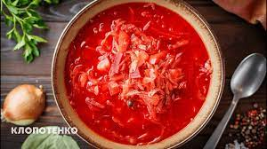

ПОСТНЫЙ БОРЩ ПОЛЕСЬЯ
Описание
Начнем свою подборку вегетарианского борща.
Он записан в одном из сел Полесья, где жители рассказали, что раньше мясо
было только по большим праздникам, поэтому приходилось перебиваться безнего.
Лишь иногда ели смалец или сало чесноком. Поэтому и борщ был постный!
Однако это лишь положительно отразилось на его вкусе – он стал еще лучше.
Ингредиенты
2 л воды
3-4 картофеля
2 свеклы
1 лук репчатый
200 г квашеной капусты (с рассолом)
½ моркови
½ болгарского перца
1-2 ст. л. меда
2 ст. л. томатной пасты
соли и перца – по вкусу
Способ приготовления
Шаг1
Сначала приготовьте отвар из двух свекол.
Очистите и разрежьте пополам корнеплод.
Залейте его водой и отварите 40 мин до готовности.
После продолжайте варить дальше, добавив ½ луковицы.
Шаг2
Нарежьте 3-4 картофелины кубиками и пол моркови соломкой.
Варите их вместе со свеклой.
Шаг3
Сделайте зажарку. Нарежьте кубиками пол болгарского перца и вторую половину лука.
Обжарьте 3-5 минут с небольшим количеством растительного масла.
Добавьте 2 ст. л. томатной пасты и протушите еще 2-3 минуты.
Шаг4
Дайте отвару из свеклы остыть и нарежьте произвольно.
А потом – вместе с зажаркой отправьте обратно в отвар.
Шаг5
Когда все овощи приготовятся, добавьте квашеную капуст с 200 г рассола.
Проварите 2-3 минуты и добавьте соль, перец и 1-2 ст.л. меда.
Шаг6
Оставьте настаиваться готовый борщ 15-20 минут или помести
те на это время в духовку на 180 градусов.
Шаг7
Подавать лучше на следующий день, чтобы настоялся.
Так говорят в народе!